Post-deploy QA v6.38 — 30.10.2026.
Oba javna servisa odgovaraju v6.38 iz commita 41d6598f118487ede3ac2f16c552e31b6a487e96 (game.js identičan posle CRLF/LF normalizacije). Produkcija je proverena samo javnim HTTP odgovorima.
Zasebni APK com.yamb.balkan.staging; emulator-5554 i emulator-5556, originalnih 1440×3120/560dpi. Oba prijavljena QA naloga zadržana. Samo QA aplikacije ponovo pokrenute, bez brisanja podataka ili promene geometrije.
Svih deset tema primenjeno jednim izborom u Podešavanjima. Finalni kadrovi pregledani; Zelena vraćena. Fiksno čekanje od 14 sekundi pre snimanja ne predstavlja izmereno vreme učitavanja. Cache nije očišćen i unutrašnji retry nije instrumentovan.
Otvoren zastoj pri pokretanju: drugi emulator oporavljen opcijom Sačekaj. Uzrok nije poznat; ovo nije potvrda brzog hladnog starta.
R33 je objavljen, ali novi native tehnički poraz sa nultom kaznom nije ponovljen. Pre/posle QA profili, salda, rezultati i broj preuzimanja identični; Daily nepreuzet. Nema nove partije, reklame ili poziva.
Potpuna evidencija, javni hash i granice dokaza · Preostale provere
Otvoren nalaz: Android prijavljuje da QA aplikacija ne odgovara posle ponovnog pokretanja. Ovo nije uspešan kadar.
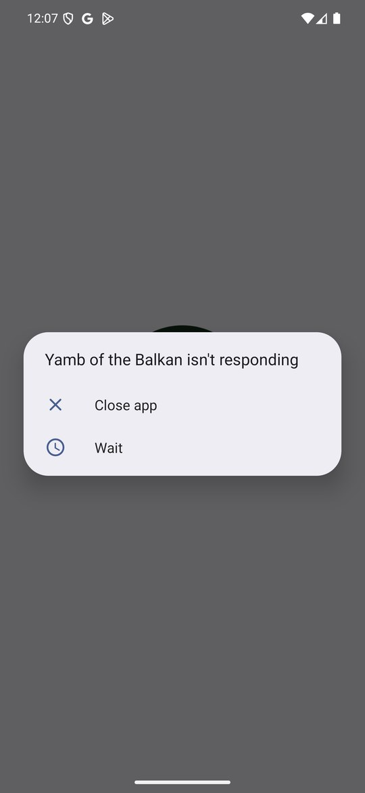
Drugi emulator: glavni meni oporavljen posle opcije Sačekaj; uzrok zastoja nije utvrđen.
Prvi emulator: glavni meni Mesečevog Sjaja posle ponovnog pokretanja QA aplikacije.
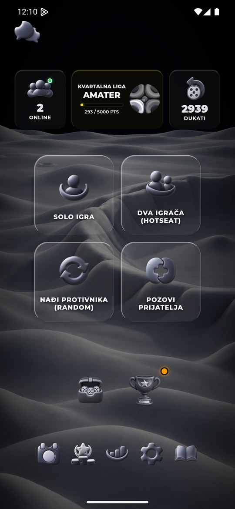
Zelena: Podešavanja posle jednog izbora. Zelena je izabrana pri završnom vraćanju.
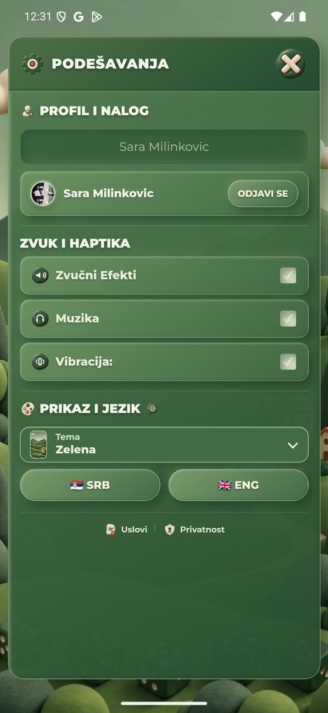
Neon Cyber: Podešavanja posle jednog izbora. Zelena je izabrana pri završnom vraćanju.
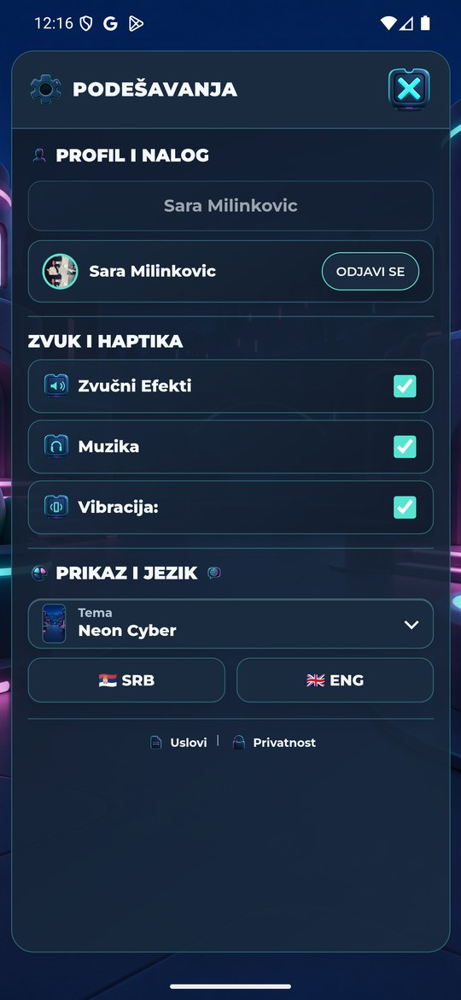
Vaskršnja: Podešavanja posle jednog izbora. Zelena je izabrana pri završnom vraćanju.
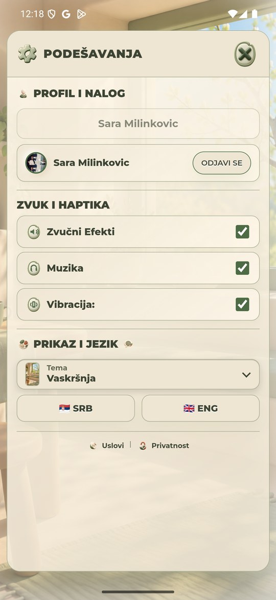
Pustinjsko Staklo: Podešavanja posle jednog izbora. Zelena je izabrana pri završnom vraćanju.
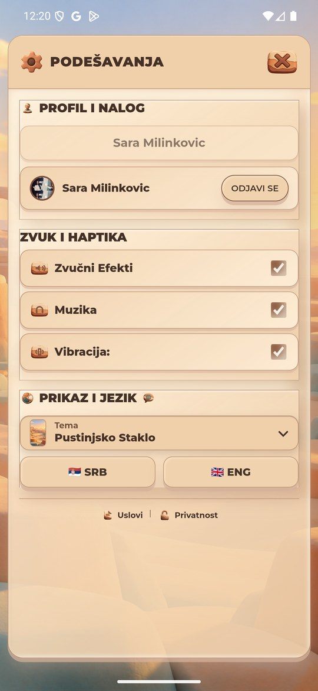
Severna Maglina: Podešavanja posle jednog izbora. Zelena je izabrana pri završnom vraćanju.
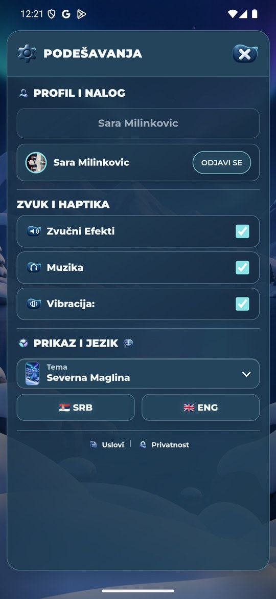
Svetlo Zlato: Podešavanja posle jednog izbora. Zelena je izabrana pri završnom vraćanju.
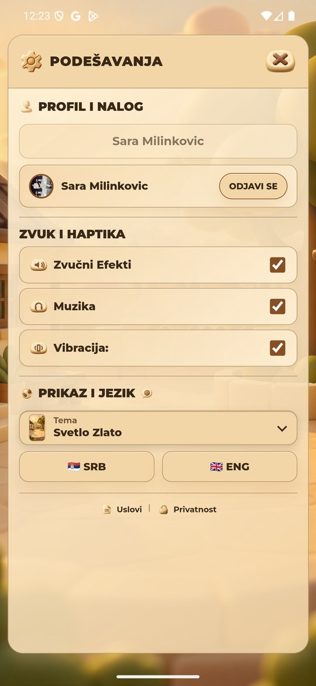
Trula Višnja: Podešavanja posle jednog izbora. Zelena je izabrana pri završnom vraćanju.
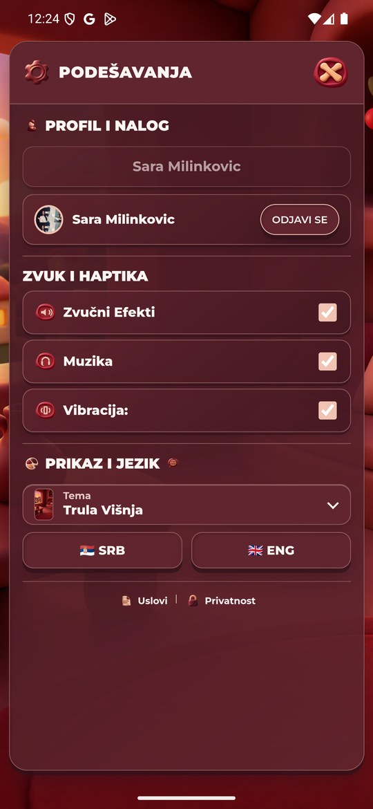
Plavi Okean: Podešavanja posle jednog izbora. Zelena je izabrana pri završnom vraćanju.
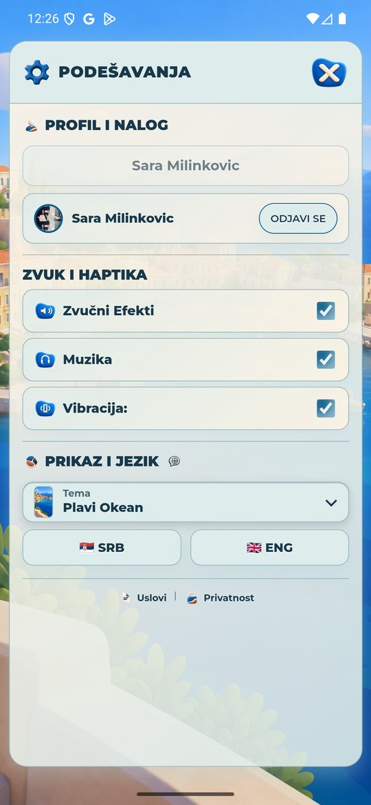
Kraljevski Ametist: Podešavanja posle jednog izbora. Zelena je izabrana pri završnom vraćanju.
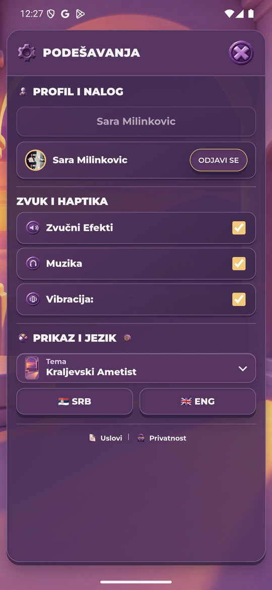
Mesečev Sjaj: Podešavanja posle jednog izbora. Zelena je izabrana pri završnom vraćanju.
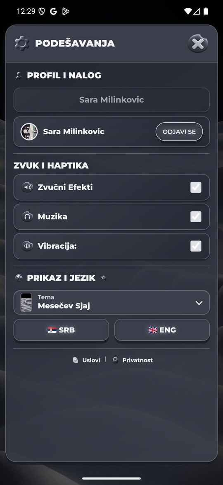
Završno stanje drugog emulatora: Zelena i glavni meni, Podešavanja zatvorena.
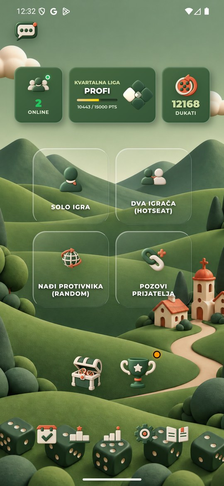